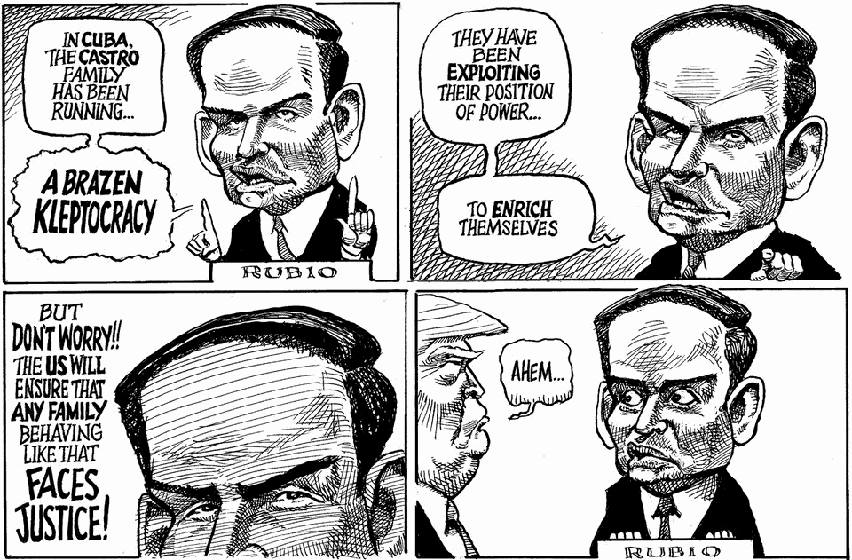

The world this week
The weekly cartoon
June 4th 2026

Dig deeper into the subjects of this week’s cartoon:
Donald Trump could be the man to save Cuba
Attacking Cuba would be a huge mistake
Would American military action against Cuba work?
The editorial cartoon appears weekly in The Economist. You can see last week’s here.